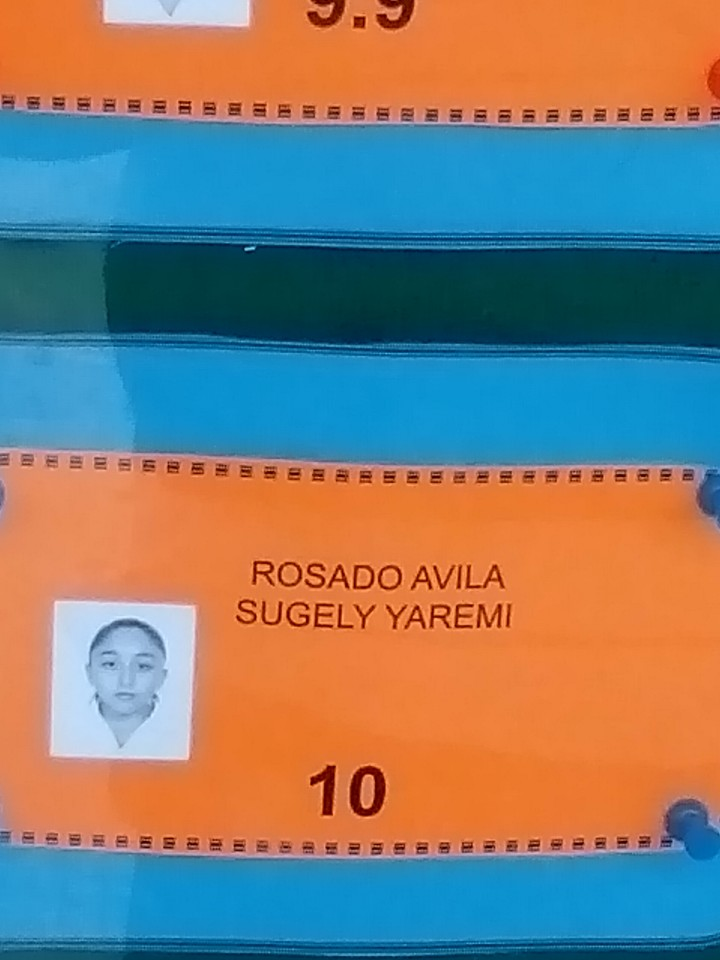
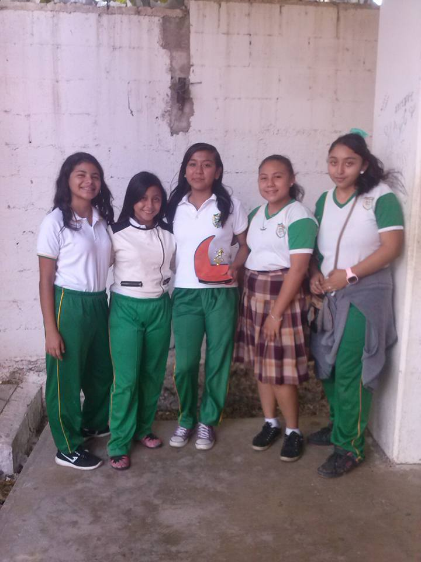
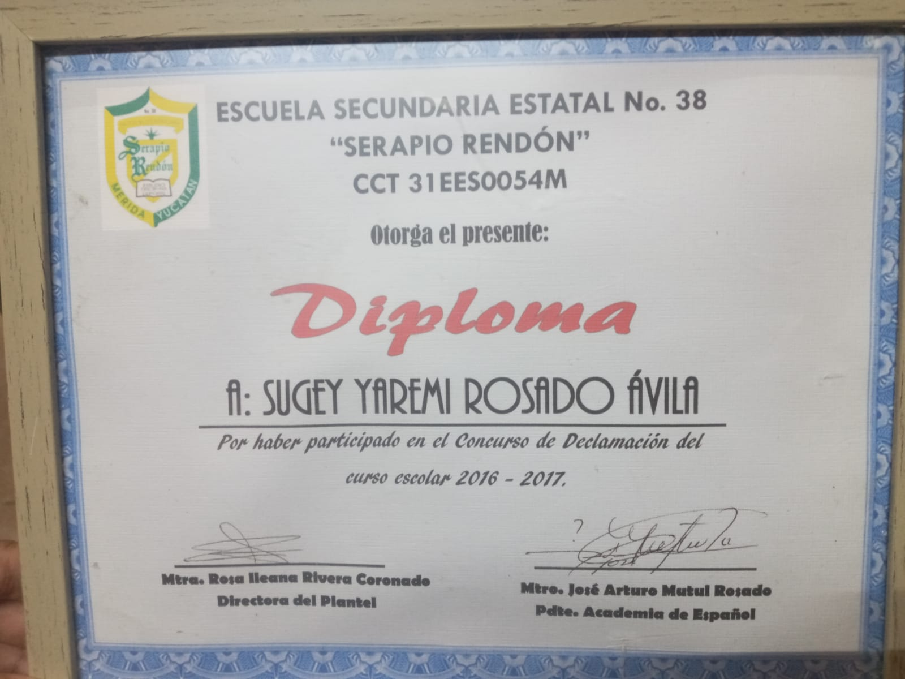
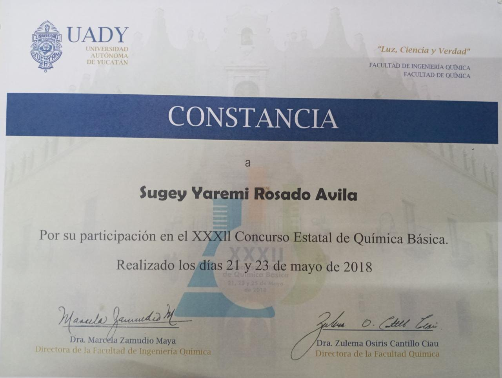
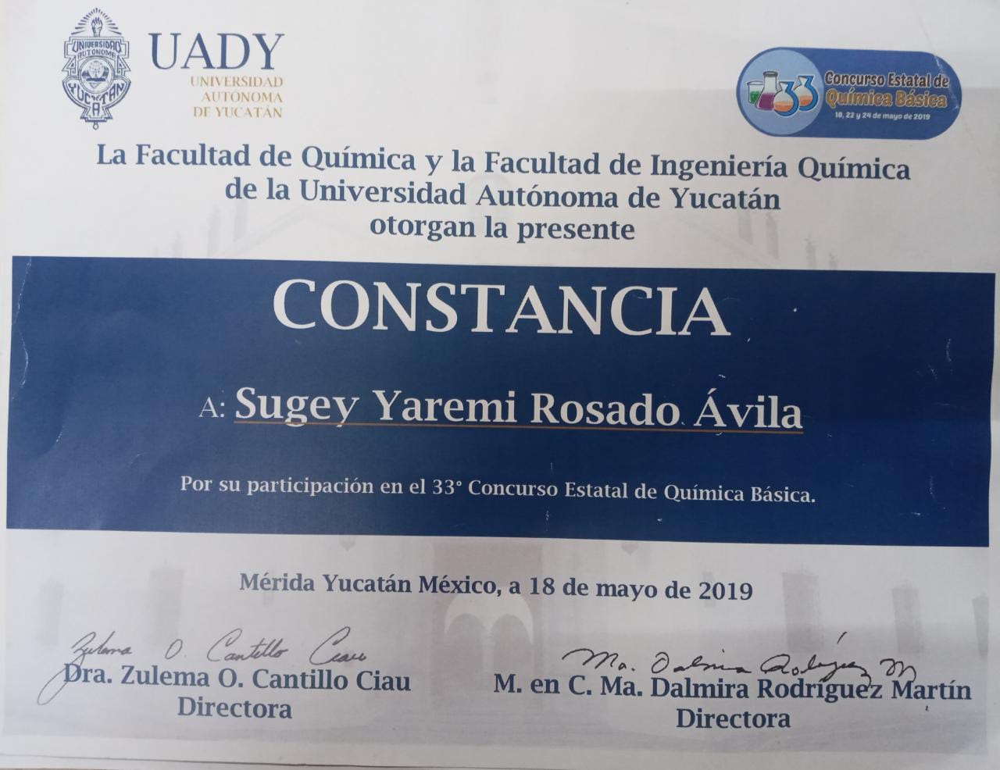
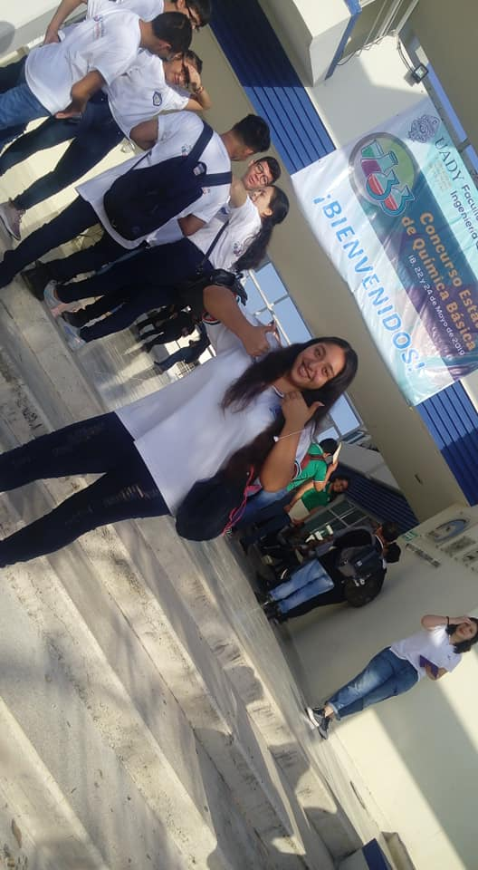
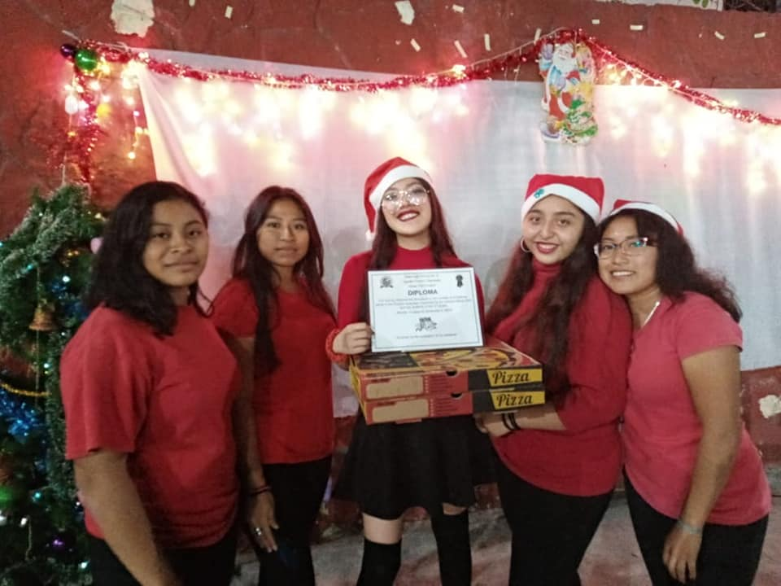
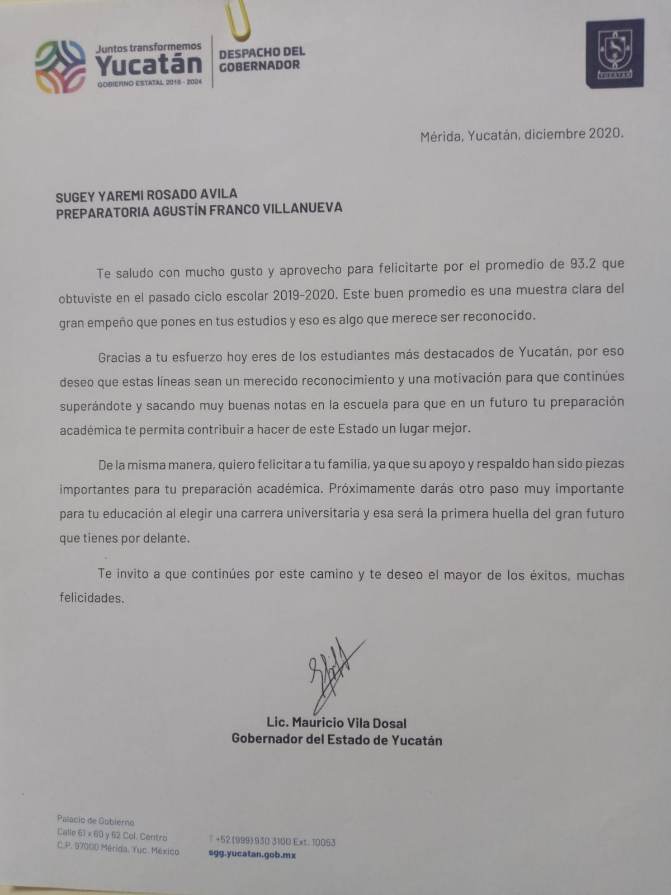

Logros academicos de Sugey
Cuadros de honor
Desde pequeña a salido en cuadros de honor
Torneo de futbool
En ese torneo todos creian que no lo iban a logran, ya que nada estaba a favor de su equipo, pero ella junto con su equipo logro demostrarles que si podian. En el partido final se fueron a penales y sugey metio el gol ganador, eso mostro que nada esta escrito todavia, ya que todo puede cambiar en un segundo.
Concurso de declamación
Ella tenia problemas para socializar, hablaba muy bajo y era muy timida, ero un dia una maestra a la cual ella aprecia mucho, llego al salon preguntado ¿QUIEN QUERIA ARTICIAR EN EL CONCURSO DE DECLAMACION?, sugey pregunto ¿el que era eso?, una compañera se burlo de ella y le dijo que no tenia sentido que preguntara sobre eso, ya que ella no lograria entrar por su forma de ser, Sugey como ya estaba acostrumbrado a que personas la subestimaran, ella solo la ignoro y volvio a preguntarle a la maestra, la cual le respondio, pero Sugey no eseraba que la maestra le dijiera que ella no podria con ese concurso or su forma de hablar, a Sugey le dolio que esa maestra no co nfiara en sus capacidades, y aunque realmente todo estaba en contra de Sugey, ella decidio inscribirse en ese concurso, practico y practico, ella no se rindio, para superar sus limitaciones ella practicaba declamacion en la calle, en salones de otros grados y grupos, en el teatro, ella practico delante de muchas personas hasta que logro superar sus miedos y pulio tanto su nueva avilidad que logro ser reconocida or todos en esa escuela como la "creacion de la maestra Guadalupe" lo cual en esa escuela era esppecial por la reutacion de esa maestra y que no cualquiera odia considerarse asi. Pasaron los años y ella fue selecionada para participar en un concurso de declamacion, esta vez ella no tuvo que inscribirse, ya que por el prestigio que ella ya se habia ganado en esa area, ella fue seleccionada automaticamente. Asi logro demostrar que "EL QUERER, ES PODER".
Concunso estatal de quimica basica
  Fue seleccionada 2 veces seguidas para ir en prepresentacion de su escuela en el concurso estatal de quimica basica de la UADY
Concurso de villancisco
Se habian inscrito una noche antes del concurso, muchos de los particippantes se burlaron de ellas, pero ellas ignoraron las burlas y les demostraron que hicieron mal en subestimarlas ya que lograron obtener el primer lugar en el concurso, ya que ellas lograron vencer con una noche y un dia de practica a equipos que llevaban semanas de preparacion
Carta del Gobernador del estado de Yucatán
Obtuvo el mejor promedio de su generacion y logro ser unos de los estudiantes más destacados del estado de Yucatán y por lo tanto el Gobernador del estado le mando una carta donde la felicitaba por haber obtenido ese promedio